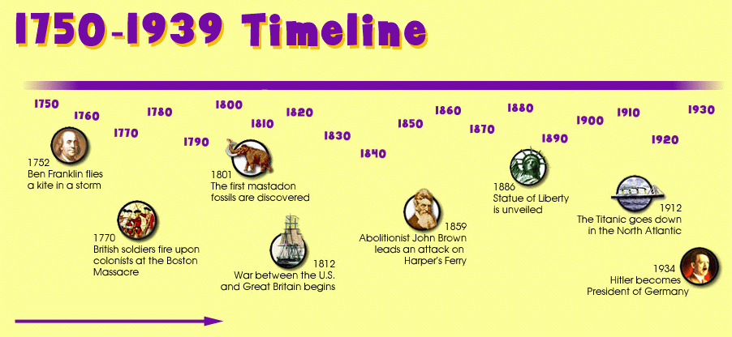

History of This Topic
The history of this subject goes back centuries. It has evolved over time, shaping the world we know today. Learn more about the key events and figures that have influenced its development.
Key Milestones
- Year 1: Significant Event 1 - Description
- Year 2: Significant Event 2 - Description
- Year 3: Significant Event 3 - Description
Important Figures
Throughout history, many important figures have contributed to the growth and development of this topic. Below are some of the key personalities:
- Person 1: Description of their contribution
- Person 2: Description of their contribution
- Person 3: Description of their contribution
Fun Fact
Did you know that the history of this topic includes some surprising events? For example, Event X in Year Y changed the way people viewed this topic forever!
Timeline
Here’s a visual timeline of important events in the history of this subject:
For more information, check out History.com.